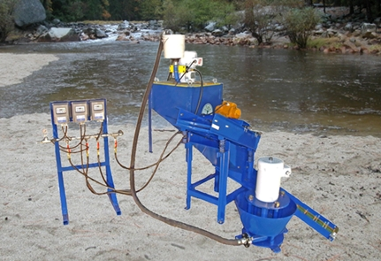

iCON Gold Recovery Corporation
Concentración por Gravedad Mejorada a
Pequeña Escala y para Minería Artesanal
Sin Mercurio - Sin Cianuro
iCON Es Usada Para:
|
|
¿Qué es iCON?
iCON es una familia de productos diseñados específicamente para recuperar el oro fino. iCON fue diseñado por ingenieros profesionales de Falcon Concentrators y utiliza las mismas tecnologías patentadas utilizadas en las minas más grandes del mundo.
El corazón de la familia iCON es la mundialmente conocido Concentrador iCON i150.
iCON utiliza la clasificación y la gravedad mejorada en sus concentradores centrífugos para asegurar que se está recuperando la mayor cantidad de oro posible.
 iCON es apoyado por los gobiernos de todo el mundo debido a su capacidad para recuperar el orosin el uso de mercurio, cianuro y otros productos químicos tóxicos.
iCON es apoyado por los gobiernos de todo el mundo debido a su capacidad para recuperar el orosin el uso de mercurio, cianuro y otros productos químicos tóxicos.
iCON fue diseñado para un Proyecto sobre el Mercurio de las Naciones Unidas Mundiales para traer las técnicas profesionales a los pequeños mineros en todo el mundo.
iCON utiliza la misma tecnología probada que la marca Falcon de productos mineros profesional: fue diseñado por ingenieros de Falcon y ahora es un producto de iCON Gold Recovery Corp. La Historia y Responsabilidad Ambiental se discuten en nuestro sitio web.
Características que hacen del Concentrador iCON el ideal para aplicaciones de pequeña escala son:
|
|
Línea de Productos iCON
iCON Gold Recovery Corp. ofrece una amplia gama de plantas de recuperación de oro y vende los componentes individualmente. La línea de productos incluye:
Concentradores iCON, Bombas, Zarandas y Plantas |
|
|
iCON iPump 3.0 - Próximamente |
Trailer mounted - Próximamente iCON Planta IGR 1000 - Doble planta lavador i150 para la arcilla |
Comentarios Generales sobre Procesamiento de Minerales
 A lo largo de la historia el procesamiento del oro ha estado plagado de ineficiencia y contaminación. Millones de dólares en oro fino han sido descartados en los relaves o "entrado a el arroyo", debido a un inadecuado procesamiento.
A lo largo de la historia el procesamiento del oro ha estado plagado de ineficiencia y contaminación. Millones de dólares en oro fino han sido descartados en los relaves o "entrado a el arroyo", debido a un inadecuado procesamiento.
Otras operaciones desde hace mucho tiempo ponen la salud de los trabajadores, y nuestro planeta en peligro con el uso de mercurio, cianuro y otros químicos peligrosos.
La tecnología iCON trata con éxito ambas cuestiones, asegurando que el mayor porcentaje de oro se recupera y no son necesarios productos químicos peligrosos.
El factor más importante en el procesamiento de minerales es la clasificación, el tamaño relativo del oro a procesar debe ser conocido. El procesamiento de minerales es caro y consume tiempo.
El procesamiento de materiales de gran tamaño que se sabe que no tienen ningún valor, cuesta tiempo y dinero. Con la clasificación, el tiempo, la energía y el dinero no se desperdiciaran procesando material de exceso que se sabe que no tiene valor.
Por ejemplo, si usted sabe que el oro más grande es de 0.5 mm, entonces no hay razón para poner material de 10 mm a través de su proceso. Además, la alimentación de gran tamaño afectará la eficiencia en cualquier proceso. Los materiales de gran tamaño dificultan la recuperación de los materiales más finos.
Por ejemplo, un minero mejorar su recuperación de 40% a 70% simplemente por su selección de alimentación de 8 mm a 2 mm. No perderá oro, porque su oro más grande esta alrededor de 0,5 mm.
El método iCON mejorará su proceso de selección de su alimentación con el tamaño adecuado.
Esto reducirá el volumen de piensos y aumentar el porcentaje de oro que se recupera.
iCON utiliza un proceso de 2 pasos, clasificación y concentración.
Su alimentación se seleccionará a 2 mm (o menos basado en sus resultados) antes de ser procesada en el concentrador. Cualquier material más grande que la malla pasará por encima a la nugget trap. Esto le dará la confianza a los usuarios de que están recogiendo el oro BIG (tamaños grandes) y reducir al mínimo la alimentación del concentrador y maximizar su eficiencia.